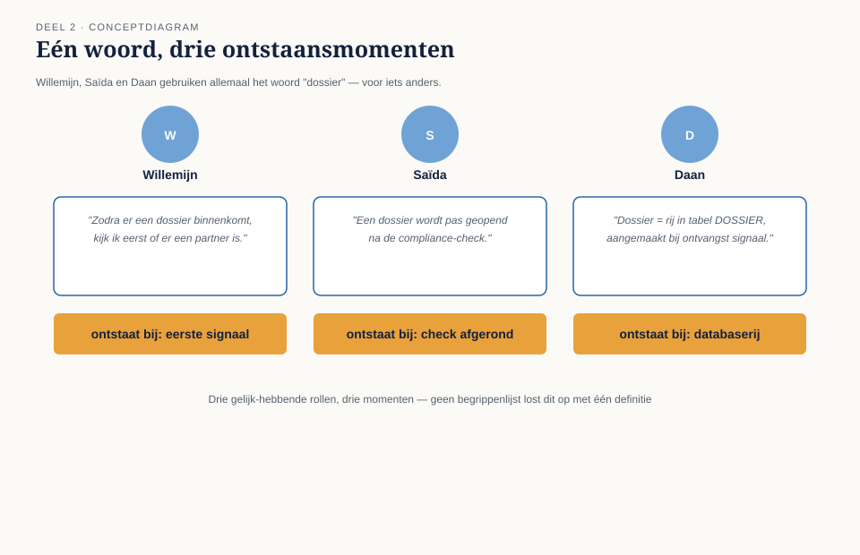
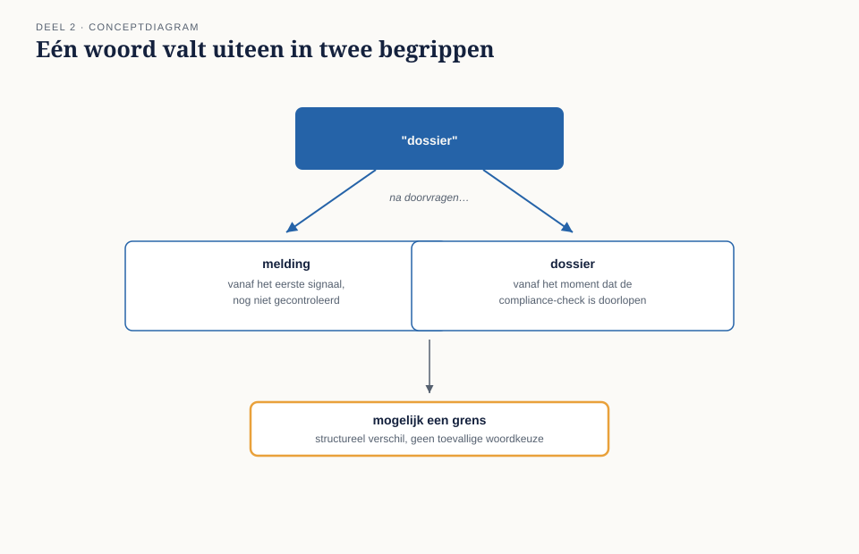
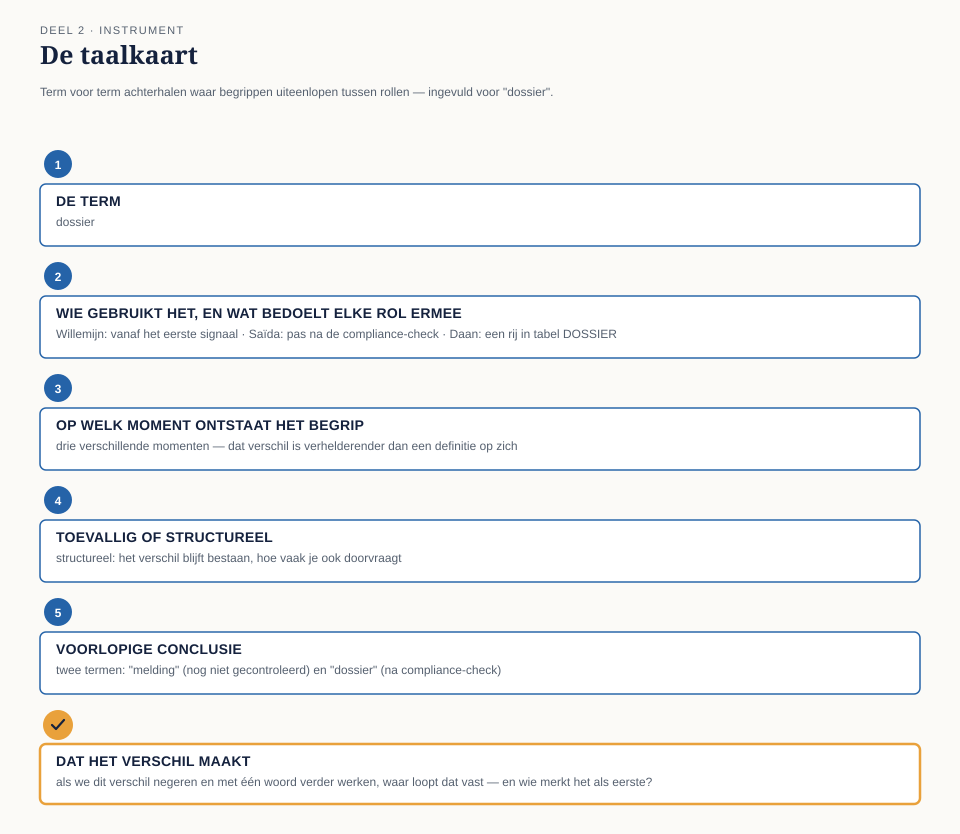

Cursus Domain-Driven Design · Niveau 1 (fundament) · Deel 2 van 30
Taal als ontwerpmiddel, niet als glossarium
In deel 1 stelde het team vast dat het vaststellen van recht op partnerpensioen de investering van DDD rechtvaardigt. Dit deel gaat over het eerste instrument: de taal die het team gaat gebruiken. Willemijn, Saïda en Daan gebruiken hetzelfde woord — “dossier” — voor drie verschillende dingen, en de taalkaart maakt zichtbaar wat een begrippenlijst zou hebben toegedekt.
7secties
±1uleestijd + opdrachten
6controlevragen
5velden taalkaart
Positionering. Deze cursus bereidt voor op de iSAQB® Advanced Level-module Domain-Driven Design en is uitdrukkelijk geen vervanging van een erkende iSAQB-training — zij levert op zichzelf geen certificaat op. Alle formuleringen, figuren en werkvormen zijn van Ductus; waar wij naar begrippen van Eric Evans en Vaughn Vernon verwijzen, doen wij dat in eigen woorden en eigen voorbeelden. Studeer voor de module altijd óók bij een erkende provider.
Niveau 1: ➊ Wat DDD is → ➋ Ubiquitous language (hier) → ➌ Domain/subdomain → ➍ Model vs. implementatie → ➎ Entity/value object → ➏ Aggregate → ➐ Domain event → ➑ Services/factory/repository → ➒ Bounded context → ➓ Examentraining + capstone
01
Waar dit deel over gaat
⏱ 5 min
In deel 1 bepaalde het team met de complexiteitstoets welk onderdeel van het Nabestaandenloket de investering van Domain-Driven Design rechtvaardigt: het vaststellen van recht op partnerpensioen bij samenloop van claims. Daarmee is nog niets opgelost — het team ontdekte alleen dát er iets moet gebeuren. Dit deel gaat over het eerste, en volgens sommigen het belangrijkste, instrument van DDD: de taal die het team gaat gebruiken.
Aan het eind van dit deel kun je:
in eigen woorden uitleggen wat ubiquitous language is en waarom het meer is dan een begrippenlijst;
laten zien hoe hetzelfde woord in verschillende rollen verschillende dingen kan betekenen, en waarom dat een ontwerpsignaal is;
met de taalkaart term voor term achterhalen waar begrippen uiteenlopen en waar dat wijst op een verborgen grens;
uitleggen waarom een taalverschil dat je negeert, later als een technisch defect terugkomt.
02
De casus: drie zinnen over “dossier”
⏱ 10 min
Daan krijgt de opdracht om de eerste gesprekken met Willemijn Brugman uit te schrijven, als voorbereiding op het modelleren van het onderdeel “vaststellen recht op partnerpensioen”. Hij legt zijn aantekeningen naast een e-mail van Saïda Fontein, de compliance-adviseur, over hetzelfde onderwerp.
Willemijn, in het gesprek: “Zodra er een dossier binnenkomt, kijk ik eerst of er een partner is.”
Saïda, in haar e-mail: “Een dossier wordt pas geopend als de compliance-check op de melding is uitgevoerd.”
Daan, in zijn eigen technische aantekeningen: “Dossier = rij in de tabel DOSSIER, aangemaakt bij ontvangst van een BRP-signaal of telefonische melding.”
Drie zinnen, drie momenten waarop volgens de spreker een “dossier” ontstaat: bij binnenkomst van de melding (Willemijn), na een compliance-check (Saïda), of bij het aanmaken van een databaserij (Daan, onbewust vanuit de techniek geredeneerd). Daan belt Tijmen Oosterhuis, de product owner, in de veronderstelling dat hij een klein misverstand moet oplossen.
“Ik denk dat we gewoon moeten afspreken wat een dossier is,” zegt Daan. “Ik zet het in een begrippenlijst en dan weet iedereen het.”
“Dat is niet genoeg,” zegt Tijmen. “Bij WGP 2.0 stond er ook een begrippenlijst, achterin het functioneel ontwerp. Niemand keek er meer naar zodra de bouw begon. Het probleem is niet dat het woord nergens gedefinieerd staat. Het probleem is dat drie mensen, die allemaal gelijk hebben binnen hun eigen rol, drie verschillende dingen bedoelen — en dat wij dat verschil moeten begrijpen voordat we het wegdefiniëren.”
Dat is het onderwerp van dit deel: taal niet vastleggen als opzoekwerk achterin een document, maar gebruiken als instrument om te ontdekken waar het domein zelf grenzen kent die nog niemand had getekend.
03
Wat ubiquitous language is
⏱ 14 min
Ubiquitous language — letterlijk: alomtegenwoordige taal — is de taal die domeinexperts en het ontwikkelteam samen spreken over één afgebakend deel van het domein, en die in gesprekken, documentatie én code op dezelfde manier wordt gebruikt.
Drie eigenschappen maken dit meer dan een woordenlijst.
Gedeeld, niet opgelegd
De taal ontstaat in het gesprek tussen Willemijn en het team, niet doordat Daan een lijst opstelt en die rondstuurt. Als Willemijn een woord gebruikt dat niet klopt met wat het team bedoelt, past het team zijn taal aan haar aan — niet andersom. Zij kent het domein; het team leert het.
Gebruikt in de code, niet alleen in gesprekken
Het bijzondere aan ubiquitous language is dat het niet stopt bij de vergaderruimte. Een term die het team met Willemijn afspreekt, hoort letterlijk terug te komen in de namen die Daan in zijn ontwerp en code gebruikt. Zodra de code een ander vocabulaire hanteert dan het gesprek, ontstaat er een vertaalslag — en elke vertaalslag is een plek waar betekenis verloren kan gaan, zoals bij WGP 2.0 gebeurde met het woord “mutatie”.
Begrensd tot één context
Ubiquitous language geldt niet voor de hele organisatie tegelijk. Het is de taal van dít deel van het domein, met dít team, over déze verzameling begrippen. Dat “dossier” bij Nabestaandenzaken iets anders kan betekenen dan bij een toekomstig Mutatieplatform, is geen fout die opgelost moet worden — het is een signaal dat er mogelijk twee verschillende afgebakende gebieden bestaan. Dat signaal komt in deel 9 uitgebreid terug, wanneer het team leert wat zo’n gebied — een bounded context — precies is.

Figuur 2-1 — drie sprekers, één woord, drie verschillende momenten waarop het volgens hen ontstaat
Waarom een glossarium niet volstaat
Een glossarium is een statisch document: het legt één betekenis vast en verwacht dat iedereen zich daaraan houdt. Dat werkt voor woorden die werkelijk eenduidig zijn. Het werkt niet voor woorden waarvan de betekenis verschilt per rol, per moment, of per situatie — en juist dat soort woorden zijn de interessante, omdat het verschil zelf iets vertelt over hoe het domein in elkaar zit.
Een glossarium behandelt “dossier” als één ding met één definitie die je erin schrijft en waarmee de discussie gesloten is. Ubiquitous language behandelt het verschil tussen Willemijns “dossier” en Saïda’s “dossier” als een vraag die om onderzoek vraagt: gaat het hier om twee namen voor hetzelfde, of om twee dingen die toevallig dezelfde naam hebben gekregen? Bij WGP 2.0 werd die vraag nooit gesteld.
Controlevraag
Uit Werkboek deel 2, Dossierstuk 2-A — drie uitspraken over “toekenning”
1Willemijn: “toegekend zodra ik het weet.” Corné: “toegekend zodra de eerste betaling is gedaan.” Saïda: “toegekend zodra een tweede paar ogen heeft goedgekeurd.” Is dit verschil structureel of toevallig?Toon antwoord
Structureel. Elk moment beschrijft een andere fase met een eigen risico: tussen Willemijns vaststelling en Saïda’s goedkeuring kan een fout worden gevonden; tussen Saïda’s goedkeuring en Corné’s eerste betaling kan een technisch betaalprobleem optreden. Het zijn drie verschillende, opeenvolgende gebeurtenissen — geen drie namen voor dezelfde gebeurtenis. Een glossarium met één definitie van “toekenning” zou dit verschil hebben weggedefinieerd.
04
Taal als symptoom van een verborgen grens
⏱ 14 min
De kern van dit deel, en de reden waarom ubiquitous language meer is dan een schrijfvoorschrift: wanneer hetzelfde woord in twee rollen structureel iets anders betekent, en dat verschil niet toevallig of slordig is maar consequent terugkeert, wijst dat vaak op een grens in het domein die nog niet is getekend.
Bij het Nabestaandenloket is dat zichtbaar in het verschil tussen Willemijns “dossier” (het geheel van alles wat met één overlijden te maken heeft, vanaf het moment dat zij ervan hoort) en Saïda’s “dossier” (iets wat pas ontstaat ná een compliance-check — voor haar bestaat er in de tussentijd een “melding”, geen dossier). Dit is geen kwestie van de één die het “goed” heeft en de ander die zich moet aanpassen. Willemijn en Saïda hebben het over twee verschillende fasen van hetzelfde proces, en die twee fasen verdienen mogelijk allebei een eigen naam in het model: een melding die binnenkomt en nog niet gecontroleerd is, en een dossier dat pas ontstaat als de compliance-check is doorlopen.
Dat onderscheid — één woord dat uiteenvalt in twee begrippen zodra je goed doorvraagt — is precies wat een taalkaart aan het licht brengt, en precies wat een begrippenlijst zou hebben toegedekt door simpelweg één definitie te kiezen en de andere te laten vervallen.

Figuur 2-2 — hetzelfde woord dat uiteenvalt in twee begrippen na doorvragen: mogelijk een grens
Niet elk woord is een grens
Structureel is iets anders dan toevallig: bij toevallige verschillen blijkt bij doorvragen dat iedereen uiteindelijk hetzelfde bedoelt, alleen met andere woorden. Alleen structurele verschillen — verschillen die blijven bestaan hoe vaak je ook doorvraagt — zijn een signaal voor een mogelijke grens.
Controlevragen
Uit Werkboek deel 2, Opdracht 1 — structureel of toevallig?
1Willemijn: “het wezenpensioen is één zaak.” Daan (technisch): “het wezenpensioen is twee rijen in de tabel.” Structureel of toevallig?Toon antwoord
Structureel — Willemijn beschrijft één zaak vanuit het perspectief van de communicatie (één overlijden, één ouder die berichten ontvangt), Daan beschrijft twee zaken vanuit het perspectief van de uitkeringsberekening (elk kind een eigen bedrag). Beide kunnen juist zijn — de vraag is of het model beide aspecten apart moet kunnen vastleggen.
2Saïda noemt een brief aan een nabestaande “correspondentie”, Tijmen noemt dezelfde brief “output”. Structureel of toevallig?Toon antwoord
Toevallig, mits bij doorvragen blijkt dat beiden hetzelfde stuk bedoelen — verschillend vocabulaire (procesmatig versus technisch) voor één en hetzelfde ding. Je weet dit pas zéker ná het gesprek, niet ervoor: dat is precies waarom de taalkaart een gesprek is, geen invuloefening achter je bureau.
05
De werkvorm: de taalkaart
⏱ 16 min
Het instrument van dit deel is de taalkaart: een sjabloon om, term voor term, te achterhalen waar begrippen binnen het Nabestaandenloket-domein uiteenlopen tussen rollen of contexten, en waar taal een symptoom is van een verborgen grens.
Het invulblad
Voor een gekozen term (bijvoorbeeld “dossier”, “partner”, “toekenning”) vul je in:
Veld
Vraag
De term
Eén woord of korte uitdrukking die in meerdere gesprekken terugkomt.
Wie het gebruikt, en wat zij ermee bedoelen
Per rol een korte, letterlijke omschrijving — geen samenvatting, maar zo dicht mogelijk bij hoe de persoon het zelf zegt. Bij twijfel: citeer.
Op welk moment ontstaat het begrip, volgens die rol?
Vaak verhelderender dan een definitie op zich: twee mensen kunnen hetzelfde woord gebruiken voor dingen die op compleet verschillende momenten beginnen te bestaan.
Toevallig of structureel?
Toevallig: bij doorvragen blijkt iedereen het over hetzelfde te hebben. Structureel: het verschil blijft bestaan, hoe vaak je ook doorvraagt.
Voorlopige conclusie
Eén term met één betekenis, of twee (of meer) termen die uit elkaar getrokken moeten worden — en zo ja, welke namen krijgen ze?

Figuur 2-3 — het invulblad van de taalkaart, volledig ingevuld voor de term “dossier”
Controlevraag
Uit Werkboek deel 2, Opdracht 3 — taalkaart voor “dossier” bij een wezenpensioenzaak met meerdere kinderen
1Willemijn (communicatie): één zaak per overlijden. Daan (uitkering): één zaak per kind. Wat is de voorlopige conclusie van de taalkaart, en welke twee begrippen levert dat op?Toon antwoord
Structureel — twee legitieme perspectieven op hetzelfde geheel. Voorlopige conclusie: twee begrippen nodig — een overlijdenszaak (één per overlijden, draagt de communicatie met de nabestaande ouder) die meerdere pensioenclaims bevat (één per kind, draagt de berekening en uitbetaling). Zonder dit onderscheid stuurt het systeem straks per ongeluk twee aparte brieven over hetzelfde overlijden naar dezelfde ouder — of kan het de twee uitkeringsbedragen niet los van elkaar corrigeren.
06
Het veld dat het verschil maakt
⏱ 8 min
Onder de vier velden staat een afsluitend veld:
Het vijfde veld
Dat het verschil maakt: als we dit verschil nu negeren en met één woord verder werken, waar in het latere ontwerp loopt dat vast — en wie merkt het als eerste?
Dit veld dwingt het team van een taalkundige constatering naar een ontwerpconsequentie. “Dossier betekent voor Willemijn en Saïda iets anders” is een observatie; “als we één ‘dossier’-object bouwen, kan Saïda’s compliance-check niet meer los worden vastgelegd van Willemijns eerste intake, en dan kan zij achteraf niet aantonen wanneer de controle heeft plaatsgevonden” is een inzicht dat een ontwerpbeslissing rechtvaardigt.
Vul dit veld altijd toe naar een concrete situatie uit het casusdossier of uit een eigen gesprek, nooit naar een algemene formulering als “dat leidt tot verwarring”.
Controlevraag
Uit Werkboek deel 2, Opdracht 4 — het weggedefinieerde verschil
1Stel dat het team, in plaats van de taalkaart, een klassiek glossarium had gebruikt en voor “dossier” één definitie had gekozen. Welk probleem blijft dan onzichtbaar, en wanneer komt het waarschijnlijk alsnog aan het licht?Toon antwoord
Onzichtbaar blijft dat Saïda een apart, navolgbaar moment nodig heeft voor de compliance-check. Het probleem komt waarschijnlijk pas aan het licht bij het eerste compliance-onderzoek of bezwaar, wanneer blijkt dat het systeem niet kan tonen wanneer de controle exact heeft plaatsgevonden ten opzichte van de intake — dus pás ná oplevering, op precies het moment waarop het duurst is om te herstellen. Hetzelfde patroon als bij WGP 2.0.
07
Terug naar de casus
⏱ 9 min
Het team vult de taalkaart in voor “dossier” en ontdekt dat het woord in twee begrippen uiteenvalt: een melding (vanaf het eerste signaal, nog niet gecontroleerd) en een dossier (vanaf het moment dat de compliance-check is doorlopen). Willemijn is aanvankelijk verrast — “voor mij was dat altijd gewoon hetzelfde ding, alleen in een andere fase” — maar erkent bij het veld “dat het verschil maakt” meteen de consequentie: “Als we dat niet apart vastleggen, kan ik straks niet meer aantonen wanneer we precies wisten dat het compliance-technisch in orde was. En dat is exact waar Saïda naar vraagt als er ooit bezwaar komt.”
Rutger Zeeman, aanvankelijk sceptisch (“weer een sjabloon, net als vorige week”), test de taalkaart op een tweede term: “partner”. Daar blijkt het verschil juist toevallig — Willemijn, Saïda en Daan bedoelen, na doorvragen, uiteindelijk hetzelfde begrip. Rutger concludeert: “Dus niet elk woord waarover we discussiëren is meteen een verborgen grens. Dat scheelt, anders wordt dit een eindeloze exercitie.”
Daan trekt de conclusie die hem bij Tijmen terugbrengt: een begrippenlijst zou het verschil tussen “melding” en “dossier” hebben weggedefinieerd door één van de twee betekenissen te kiezen. De taalkaart maakte zichtbaar dát er twee dingen waren, en dat inzicht — niet de definitie zelf — is wat het team meeneemt naar de rest van niveau 1.
Samenvatting
Ubiquitous language is de taal die domeinexperts en team samen spreken, gebruikt in gesprek, documentatie én code.
Een glossarium legt één betekenis vast; de taalkaart onderzoekt of een verschil in betekenis toevallig of structureel is.
Een structureel taalverschil is vaak een signaal voor een verborgen grens in het domein.
Het vijfde veld — “dat het verschil maakt” — dwingt een taalkundige observatie om tot een concrete ontwerpconsequentie te worden.
Vooruit naar deel 3
Het team heeft nu twee scherpe begrippen: “melding” en “dossier”. Maar er is meer materiaal in het Nabestaandenloket dat om aandacht vraagt dan het team in één keer aankan. Voordat het team dieper op één onderdeel ingaat, moet eerst worden vastgesteld welk deel van het domein de kern van de zaak is en welk deel er ondersteunend of generiek omheen zit. Dat is het onderwerp van deel 3.
Controlevraag
Uit Werkboek deel 2, Opdracht 6 — de les van WGP 2.0, deel twee
1Bij WGP 2.0 dekte het woord “mutatie” vijf of zes verschillende dingen. Als het WGP 2.0-team de taalkaart had gebruikt, wat had dat waarschijnlijk aan het licht gebracht — en wannéér, vóór de bouw of pás erna?Toon antwoord
Vóór de bouw was al duidelijk geworden dat verschillende rollen — Uitvoering, Klantenservice werkgevers, de analisten zelf — structureel uiteenlopende dingen bedoelden met “mutatie”: een eenvoudige adreswijziging is inhoudelijk iets anders dan een correctie met terugwerkende kracht die meerdere regelingen raakt. Die verschillen waren dan vóór de bouw zichtbaar geworden als aparte begrippen, in plaats van pás ná livegang te blijken uit het feit dat vier op de tien mutaties niet in het model pasten.
Verder naar deel 3
Het team heeft nu twee scherpe begrippen: “melding” en “dossier”. Maar er is meer materiaal in het Nabestaandenloket dan het team in één keer aankan. Deel 3 gaat over de vraag welk deel van het domein de kern van de zaak is, en welk deel ondersteunend of generiek omheen zit.